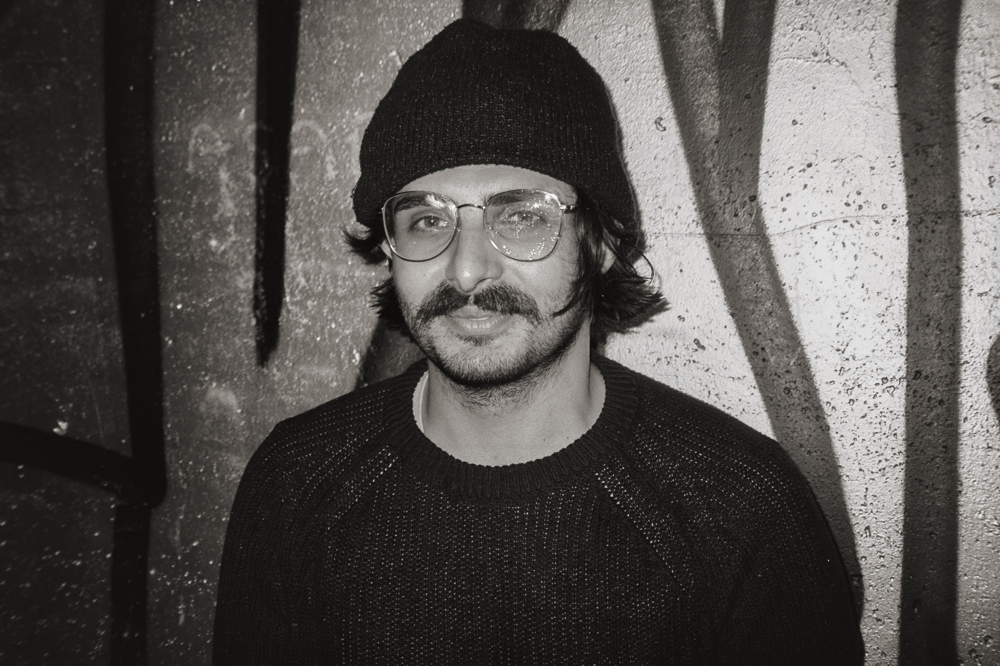

Bioinformatics, Phylo-Movies, music, and visual art
About Enes Sakalli
I work across computational biology, sound, and visual systems, building projects that connect scientific structure with creative exploration.
I also publish as Enes Berk Sakalli. My work includes Phylo-Movies and publications in phylogenetics and scientific visualization.
Focus
Bioinformatics
Research and software work around genetics, sequence analysis, phylogenetics, and computational models.
Music
Composition and performance interests spanning electronic, experimental, classical, and world music.
Visual Systems
Interactive, sculptural, and generative projects that treat form and data as materials.
Profiles
Names
I use Enes Sakalli and Enes Berk Sakalli in my publications and professional profiles.
Affiliations
Center for Integrative Bioinformatics Vienna, University of Vienna, and Ludwig Boltzmann Institute for Network Medicine.
Identifiers
Google Scholar N-sKeu4AAAAJ, ORCID 0009-0009-5027-2470, and institutional pages connect the research record.
Selected Publications
Phylo-Movies: animating phylogenetic trees from sliding-window analyses
Molecular Biology and Evolution article, published 12 August 2026, DOI 10.1093/molbev/msag194.
Read article Read preprint Open Phylo-MoviesWhen the Past Fades: Detecting Phylogenetic Signal with SatuTe
Molecular Biology and Evolution article, published 27 May 2025, DOI 10.1093/molbev/msaf090.
Read articleSequential animation of phylogenetic trees
University of Vienna thesis behind the early Phylo-Movies work, DOI 10.25365/thesis.71559.
Read thesis recordProjects and Links
Okto Kraken Synth
A graph-driven synth and step sequencer experiment.
Quantum
A browser visualization of wave collapse and measurement probabilities.
Phylo-Movies
A phylogenetic tree animation and interpolation tool for sliding-window analyses.
Scales across Frames
Scientific visual art with the Ludwig Boltzmann Institute for Network Medicine.
Darwin's Gene Memories
Stacked gene trees as an interactive DataDiVR and Plotly artwork.
Google Scholar
Research publications and citation discovery.
ORCID
Persistent researcher identifier: 0009-0009-5027-2470.
My professional profile and current affiliations.
CIBIV
Center for Integrative Bioinformatics Vienna profile.
University of Vienna
University staff profile and u:cris route.
LBI-NetMed
Ludwig Boltzmann Institute for Network Medicine profile.